Cómo elegir: mirá el impacto del hero, cómo se sienten las transiciones entre secciones, la tipografía y si te representa como marca. Podés quedarte con una, o pedir mezclar lo mejor de dos. Cada card abre el sitio navegable real (con su scroll y animaciones).
A
Editorial Nature
OpusRevista de arquitectura de lujo: serif de display, fondo piedra, aire, foto full-bleed y un cobre muy medido.
↕ scroll
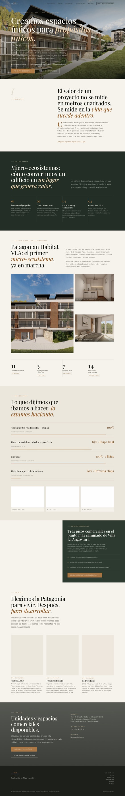
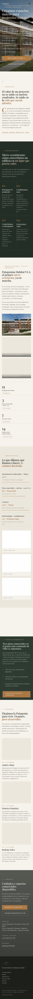
B
Immersive Cinematic
OpusDark mode envolvente: verdes nocturnos, cobre luminoso, glass y movimiento con GSAP. Máximo impacto.
↕ scroll
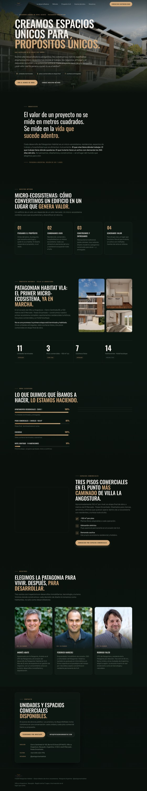
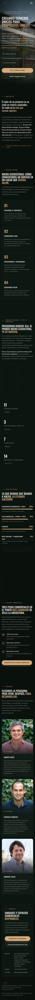
C
Organic Warm Bento
OpusCálida y modular: tarjetas bento de color, formas orgánicas, bordes redondeados. Boutique y humana.
↕ scroll
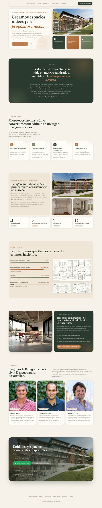
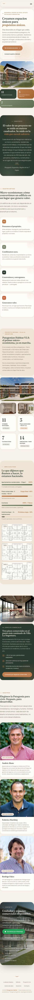
D
Tipográfica art-directed
FableSuiza/editorial: titulares enormes en mayúscula con acentos serif en itálica, numeración de secciones. Confiada.
↕ scroll
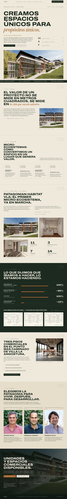
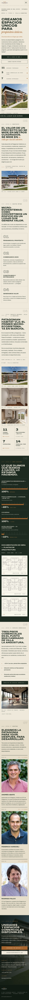
E
Atmosférica / sensorial
FableDelicada y luminosa: serif en itálica, una banda de atardecer cálido, texturas suaves. La más sensorial.
↕ scroll
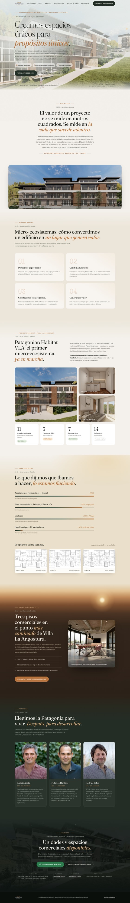
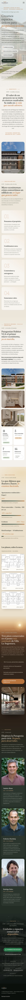
F
Audaz contemporánea
FableBandas alternadas claro/oscuro, titulares grotescos, galería rica de proyecto. Moderna y con carácter.
↕ scroll
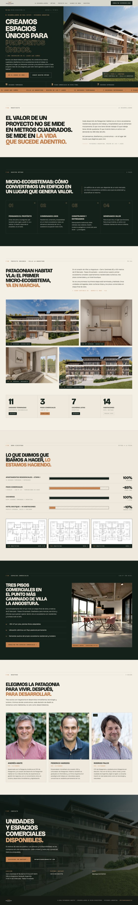
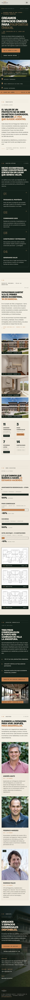
G
Arquitectónica / blueprint
CodexPrecisión técnica: grillas, cotas y los planos reales como protagonistas, en diálogo de ingeniería con la naturaleza.
↕ scroll
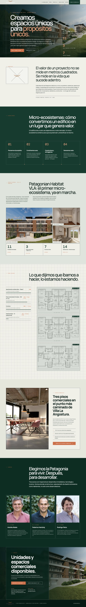
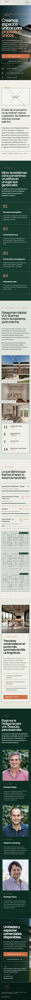
H
Editorial de color audaz
CodexRevista contemporánea con color-blocking seguro (lima + bosque + naranja), tipografía gráfica enorme. Mucho impacto.
↕ scroll
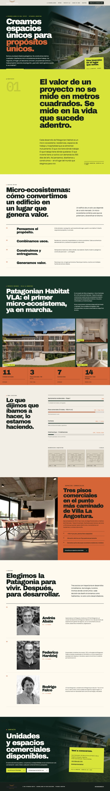
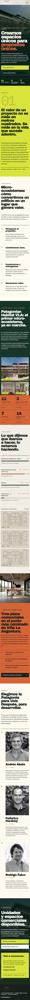
I
Inmersiva experiencial
CodexRecorrido luminoso y envolvente: foto a sangre, galería superpuesta, serif en itálica. Sensación de storytelling.
↕ scroll
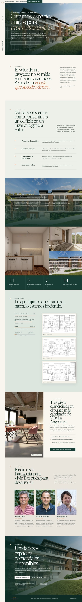
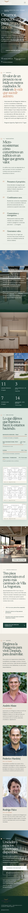
Referencia — Original de Fede
El punto de partida (index_5.html). Las seis propuestas buscan superarlo en impacto visual manteniendo el mismo contenido.
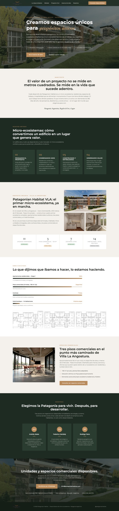